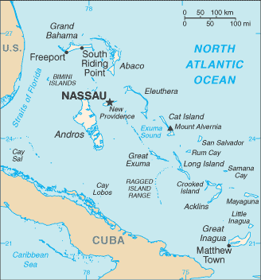
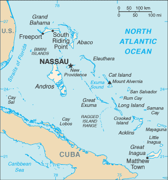

-
Introduction :: Bahamas, The
-
Background:Lucayan Indians inhabited the islands when Christopher COLUMBUS first set foot in the New World on San Salvador in 1492. British settlement of the islands began in 1647; the islands became a colony in 1783. Piracy thrived in the 17th and 18th centuries because of The Bahamas close proximity to shipping lanes. Since attaining independence from the UK in 1973, The Bahamas has prospered through tourism, international banking, and investment management. Because of its location, the country is a major transshipment point for illegal drugs, particularly shipments to the US and Europe, and its territory is used for smuggling illegal migrants into the US. Current Prime Minister Hubert MINNIS is only the fourth prime minister in Bahamian history following its independence from the UK; he is also the first prime minister in 25 years besides Perry CHRISTIE and Hubert INGRAHAM, who repeatedly traded the premiership from 1992 to 2017.THE BAHAMAS SUMMARY: PDF
-
Geography :: Bahamas, The
-
Location:chain of islands in the North Atlantic Ocean, southeast of Florida, northeast of CubaGeographic coordinates:24 15 N, 76 00 WMap references:Central America and the CaribbeanArea:total: 13,880 sq kmland: 10,010 sq kmwater: 3,870 sq kmcountry comparison to the world: 161Area - comparative:slightly smaller than ConnecticutLand boundaries:0 kmCoastline:3,542 kmMaritime claims:territorial sea: 12 nmexclusive economic zone: 200 nmClimate:tropical marine; moderated by warm waters of Gulf StreamTerrain:long, flat coral formations with some low rounded hillsElevation:0 m lowest point: Atlantic Ocean64 highest point: Mount Alvernia on Cat IslandNatural resources:salt, aragonite, timber, arable landLand use:agricultural land: 1.4% (2014 est.)arable land: 0.8% (2014 est.) / permanent crops: 0.4% (2014 est.) / permanent pasture: 0.2% (2014 est.)forest: 51.4% (2014 est.)other: 47.2% (2014 est.)Irrigated land:10 sq km (2012)Population distribution:most of the population lives in urban areas, with two-thirds living on New Providence Island where Nassau is locatedNatural hazards:hurricanes and other tropical storms cause extensive flood and wind damageEnvironment - current issues:coral reef decay; solid waste disposalEnvironment - international agreements:party to: Biodiversity, Climate Change, Climate Change-Kyoto Protocol, Desertification, Endangered Species, Hazardous Wastes, Law of the Sea, Ozone Layer Protection, Ship Pollution, Wetlandssigned, but not ratified: none of the selected agreementsGeography - note:strategic location adjacent to US and Cuba; extensive island chain of which 30 are inhabited
-
People and Society :: Bahamas, The
-
Population:332,634 (July 2018 est.)
note: estimates for this country explicitly take into account the effects of excess mortality due to AIDS; this can result in lower life expectancy, higher infant mortality, higher death rates, lower population growth rates, and changes in the distribution of population by age and sex than would otherwise be expected
country comparison to the world: 179Nationality:noun: Bahamian(s)adjective: BahamianEthnic groups:black 90.6%, white 4.7%, black and white 2.1%, other 1.9%, unspecified 0.7% (2010 est.)note: data represent population by racial groupLanguages:English (official), Creole (among Haitian immigrants)Religions:Protestant 69.9% (includes Baptist 34.9%, Anglican 13.7%, Pentecostal 8.9% Seventh Day Adventist 4.4%, Methodist 3.6%, Church of God 1.9%, Brethren 1.6%), Roman Catholic 12%, other Christian 13% (includes Jehovah's Witness 1.1%), other 0.6%, none 1.9%, unspecified 2.6% (2010 est.)Age structure:0-14 years: 22.39% (male 37,777 /female 36,686)15-24 years: 16.01% (male 26,984 /female 26,281)25-54 years: 44.1% (male 73,627 /female 73,068)55-64 years: 9.45% (male 14,298 /female 17,140)65 years and over: 8.05% (male 10,318 /female 16,455) (2018 est.)population pyramid: The World Factbook Field Image ModalCentral America :: Bahamas, The Print
The World Factbook Field Image ModalCentral America :: Bahamas, The Print Image DescriptionThis is the population pyramid for Bahamas, The. A population pyramid illustrates the age and sex structure of a country's population and may provide insights about political and social stability, as well as economic development. The population is distributed along the horizontal axis, with males shown on the left and females on the right. The male and female populations are broken down into 5-year age groups represented as horizontal bars along the vertical axis, with the youngest age groups at the bottom and the oldest at the top. The shape of the population pyramid gradually evolves over time based on fertility, mortality, and international migration trends.
Image DescriptionThis is the population pyramid for Bahamas, The. A population pyramid illustrates the age and sex structure of a country's population and may provide insights about political and social stability, as well as economic development. The population is distributed along the horizontal axis, with males shown on the left and females on the right. The male and female populations are broken down into 5-year age groups represented as horizontal bars along the vertical axis, with the youngest age groups at the bottom and the oldest at the top. The shape of the population pyramid gradually evolves over time based on fertility, mortality, and international migration trends.
For additional information, please see the entry for Population pyramid on the Definitions and Notes page under the References tab.Dependency ratios:total dependency ratio: 40.8 (2015 est.)youth dependency ratio: 29.1 (2015 est.)elderly dependency ratio: 11.7 (2015 est.)potential support ratio: 8.5 (2015 est.)Median age:total: 32.3 yearsmale: 31.1 yearsfemale: 33.5 years (2018 est.)country comparison to the world: 102Population growth rate:0.79% (2018 est.)country comparison to the world: 131Birth rate:15.1 births/1,000 population (2018 est.)country comparison to the world: 124Death rate:7.3 deaths/1,000 population (2018 est.)country comparison to the world: 119Net migration rate:0 migrant(s)/1,000 population (2017 est.)country comparison to the world: 72Population distribution:most of the population lives in urban areas, with two-thirds living on New Providence Island where Nassau is locatedUrbanization:urban population: 83% of total population (2018)rate of urbanization: 1.13% annual rate of change (2015-20 est.)Major urban areas - population:280,000 NASSAU (capital) (2018)Sex ratio:at birth: 1.03 male(s)/female (2017 est.)0-14 years: 1.03 male(s)/female (2017 est.)15-24 years: 1.03 male(s)/female (2017 est.)25-54 years: 1 male(s)/female (2017 est.)55-64 years: 0.81 male(s)/female (2017 est.)65 years and over: 0.62 male(s)/female (2017 est.)total population: 0.96 male(s)/female (2017 est.)Maternal mortality rate:80 deaths/100,000 live births (2015 est.)country comparison to the world: 80Infant mortality rate:total: 11.1 deaths/1,000 live births (2018 est.)male: 11.4 deaths/1,000 live births (2018 est.)female: 10.9 deaths/1,000 live births (2018 est.)country comparison to the world: 126Life expectancy at birth:total population: 72.9 years (2018 est.)male: 70.4 years (2018 est.)female: 75.4 years (2018 est.)country comparison to the world: 144Total fertility rate:1.94 children born/woman (2018 est.)country comparison to the world: 126Health expenditures:7.7% of GDP (2014)country comparison to the world: 62Physicians density:2.26 physicians/1,000 population (2011)Hospital bed density:2.9 beds/1,000 population (2013)Drinking water source:improved: urban: 98.4% of populationrural: 98.4% of populationtotal: 98.4% of populationunimproved: urban: 1.6% of populationrural: 1.6% of populationtotal: 1.6% of population (2015 est.)Sanitation facility access:improved: urban: 92% of population (2015 est.)rural: 92% of population (2015 est.)total: 92% of population (2015 est.)unimproved: urban: 8% of population (2015 est.)rural: 8% of population (2015 est.)total: 8% of population (2015 est.)HIV/AIDS - adult prevalence rate:1.9% (2017 est.)country comparison to the world: 25HIV/AIDS - people living with HIV/AIDS:5,300 (2017 est.)country comparison to the world: 115HIV/AIDS - deaths:NAObesity - adult prevalence rate:31.6% (2016)country comparison to the world: 21Education expenditures:NAUnemployment, youth ages 15-24:total: 30.8% (2012 est.)male: 29.6% (2012 est.)female: 32.2% (2012 est.)country comparison to the world: 27 -
Government :: Bahamas, The
-
Country name:conventional long form: Commonwealth of The Bahamasconventional short form: The Bahamasetymology: name derives from the Spanish "baha mar," meaning "shallow sea," which describes the shallow waters of the Bahama BanksGovernment type:parliamentary democracy (Parliament) under a constitutional monarchy; a Commonwealth realmCapital:name: Nassaugeographic coordinates: 25 05 N, 77 21 Wtime difference: UTC-5 (same time as Washington, DC, during Standard Time)daylight saving time: +1hr, begins second Sunday in March; ends first Sunday in Novemberetymology: named after William III, king of England, Scotland, and Ireland, who was a member of the House of NassauAdministrative divisions:31 districts; Acklins Islands, Berry Islands, Bimini, Black Point, Cat Island, Central Abaco, Central Andros, Central Eleuthera, City of Freeport, Crooked Island and Long Cay, East Grand Bahama, Exuma, Grand Cay, Harbour Island, Hope Town, Inagua, Long Island, Mangrove Cay, Mayaguana, Moore's Island, North Abaco, North Andros, North Eleuthera, Ragged Island, Rum Cay, San Salvador, South Abaco, South Andros, South Eleuthera, Spanish Wells, West Grand BahamaIndependence:10 July 1973 (from the UK)National holiday:Independence Day, 10 July (1973)Constitution:history: previous 1964 (preindependence); latest adopted 20 June 1973, effective 10 July 1973 (2018)amendments: proposed as an "Act" by Parliament; passage of amendments to articles such as the organization and composition of the branches of government requires approval by at least two-thirds majority of the membership of both houses of Parliament and majority approval in a referendum; passage of amendments to constitutional articles such as fundamental rights and individual freedoms, the powers, authorities, and procedures of the branches of government, or changes to the Bahamas Independence Act 1973 requires approval by at least three-fourths majority of the membership of both houses and majority approval in a referendum; amended many times, last in 2016 (2018)Legal system:common law system based on the English modelInternational law organization participation:has not submitted an ICJ jurisdiction declaration; non-party state to the ICCtCitizenship:citizenship by birth: nocitizenship by descent only: at least one parent must be a citizen of The Bahamasdual citizenship recognized: noresidency requirement for naturalization: 6-9 yearsSuffrage:18 years of age; universalJudicial branch:highest courts: Court of Appeal (consists of the court president and 4 justices, organized in 3-member panels); Supreme Court (consists of the chief justice and a maximum of 11 and a minimum of 2 justices)judge selection and term of office: Court of Appeal president and Supreme Court chief justice appointed by the governor-general on the advice of the prime minister after consultation with the leader of the opposition party; other Court of Appeal and Supreme Court justices appointed by the governor general upon recommendation of the Judicial and Legal Services Commission, a 5-member body headed by the chief justice; Court of Appeal justices appointed for life with mandatory retirement normally at age 68 but can be extended until age 70; Supreme Court justices appointed for life with mandatory retirement normally at age 65 but can be extended until age 67subordinate courts: Industrial Tribunal; Stipendiary and Magistrates' Courts; Family Island Administrators
note: as of 2008, the Bahamas was not a party to the agreement establishing the Caribbean Court of Justice as the highest appellate court for the 15-member Caribbean Community (CARICOM); the Judicial Committee of the Privy Council (in London) serves as the final court of appeal for The Bahamas
Executive branch:chief of state: Queen ELIZABETH II (since 6 February 1952); represented by Governor General Dame Marguerite PINDLING (since 8 July 2014)head of government: Prime Minister Hubert MINNIS (since 11 May 2017)cabinet: Cabinet appointed by governor general on recommendation of prime ministerelections/appointments: the monarchy is hereditary; governor general appointed by the monarch on the advice of the prime minister; following legislative elections, the leader of the majority party or majority coalition usually appointed prime minister by the governor general; the prime minister recommends the deputy prime ministernote: Prime Minister Hubert MINNIS is only the fourth prime minister in Bahamian history following its independence from the UK; he is also the first prime minister in 25 years besides Perry CHRISTIE and Hubert INGRAHAM, who repeatedly traded the premiership from 1992 to 2017
Legislative branch:description: bicameral Parliament consists of:
Senate (16 seats; members appointed by the governor general upon the advice of the prime minister and the opposition leader to serve 5-year terms)
House of Assembly (39 seats; members directly elected in single-seat constituencies by simple majority vote to serve 5-year terms)elections:
last held on 10 May 2017 (next to be held by May 2022)election results:
House of Assembly - percent of vote by party - FNM 57%, PLP 36.9%, other 6.1%; seats by party - FNM 35, PLP 4note: the government may dissolve the parliament and call elections at any timePolitical parties and leaders:Democratic National Alliance or DNA [Christopher MORTIMER]
Free National Movement or FNM [Hubert MINNIS]
Progressive Liberal Party or PLP [Philip "Brave" DAVIS]International organization participation:ACP, AOSIS, C, Caricom, CDB, CELAC, FAO, G-77, IADB, IAEA, IBRD, ICAO, ICC (NGOs), ICRM, IDA, IFAD, IFC, IFRCS, ILO, IMF, IMO, IMSO, Interpol, IOC, IOM, ISO (correspondent), ITSO, ITU, LAES, MIGA, NAM, OAS, OPANAL, OPCW, Petrocaribe, UN, UNCTAD, UNESCO, UNIDO, UNWTO, UPU, WCO, WHO, WIPO, WMO, WTO (observer)Diplomatic representation in the US:chief of mission: Ambassador Sidney Stanley COLLIE (since 20 November 2017)chancery: 2220 Massachusetts Avenue NW, Washington, DC 20008telephone: [1] (202) 319-2660FAX: [1] (202) 319-2668consulate(s) general: Atlanta, Miami, New YorkDiplomatic representation from the US:chief of mission: Ambassador (vacant); Charge d' Affaires Stephanie BOWERS (since 1 March 2018)embassy: 42 Queen Street, Nassau, New Providencemailing address: local or express mail address: P. O. Box N-8197, Nassau; US Department of State, 3370 Nassau Place, Washington, DC 20521-3370telephone: [1] (242) 322-1181, 328-2206 (after hours)FAX: [1] (242) 356-7174Flag description:three equal horizontal bands of aquamarine (top), gold, and aquamarine, with a black equilateral triangle based on the hoist side; the band colors represent the golden beaches of the islands surrounded by the aquamarine sea; black represents the vigor and force of a united people, while the pointing triangle indicates the enterprise and determination of the Bahamian people to develop the rich resources of land and seaNational symbol(s):blue marlin, flamingo, Yellow Elder flower; national colors: aquamarine, yellow, blackNational anthem:name: March On, Bahamaland!lyrics/music: Timothy GIBSONnote: adopted 1973; as a Commonwealth country, in addition to the national anthem, "God Save the Queen" serves as the royal anthem (see United Kingdom)
-
Economy :: Bahamas, The
-
Economy - overview:The Bahamas has the second highest per capita GDP in the English-speaking Caribbean with an economy heavily dependent on tourism and financial services. Tourism accounts for approximately 50% of GDP and directly or indirectly employs half of the archipelago's labor force. Financial services constitute the second-most important sector of the Bahamian economy, accounting for about 15% of GDP. Manufacturing and agriculture combined contribute less than 7% of GDP and show little growth, despite government incentives aimed at those sectors. The new government led by Prime Minister Hubert MINNIS has prioritized addressing fiscal imbalances and rising debt, which stood at 75% of GDP in 2016. Large capital projects like the Baha Mar Casino and Hotel are driving growth. Public debt increased in 2017 in large part due to hurricane reconstruction and relief financing. The primary fiscal balance was a deficit of 0.4% of GDP in 2016. The Bahamas is the only country in the Western Hemisphere that is not a member of the World Trade Organization.GDP (purchasing power parity):$12.06 billion (2017 est.)$11.89 billion (2016 est.)$12.09 billion (2015 est.)
note: data are in 2017 dollars
country comparison to the world: 156GDP (official exchange rate):$12.16 billion (2017 est.) (2017 est.)GDP - real growth rate:1.4% (2017 est.)-1.7% (2016 est.)1% (2015 est.)country comparison to the world: 175GDP - per capita (PPP):$32,400 (2017 est.)$32,300 (2016 est.)$33,200 (2015 est.)note: data are in 2017 dollars
country comparison to the world: 62Gross national saving:11.4% of GDP (2017 est.)18.2% of GDP (2016 est.)12.3% of GDP (2015 est.)country comparison to the world: 155GDP - composition, by end use:household consumption: 68% (2017 est.)government consumption: 13% (2017 est.)investment in fixed capital: 26.3% (2017 est.)investment in inventories: 0.7% (2017 est.)exports of goods and services: 33.7% (2017 est.)imports of goods and services: -41.8% (2017 est.)GDP - composition, by sector of origin:agriculture: 2.3% (2017 est.)industry: 7.7% (2017 est.)services: 90% (2017 est.)Agriculture - products:citrus, vegetables; poultry; seafoodIndustries:tourism, banking, oil bunkering, maritime industries, transshipment and logistics, salt, aragonite, pharmaceuticalsIndustrial production growth rate:5.8% (2017 est.)country comparison to the world: 44Labor force:196,900 (2013 est.)country comparison to the world: 173Labor force - by occupation:agriculture: 3%industry: 11%services: 49%tourism: 37% (2011 est.)Unemployment rate:10.1% (2017 est.)12.2% (2016 est.)country comparison to the world: 140Population below poverty line:9.3% (2010 est.)Budget:revenues: 2.139 billion (2017 est.)expenditures: 2.46 billion (2017 est.)Taxes and other revenues:17.6% (of GDP) (2017 est.)country comparison to the world: 166Budget surplus (+) or deficit (-):-2.6% (of GDP) (2017 est.)country comparison to the world: 115Public debt:54.6% of GDP (2017 est.)50.5% of GDP (2016 est.)country comparison to the world: 80Fiscal year:1 July - 30 JuneInflation rate (consumer prices):1.4% (2017 est.)-0.3% (2016 est.)country comparison to the world: 75Central bank discount rate:4.5% (1 January 2014)4.5% (31 December 2012)country comparison to the world: 85Commercial bank prime lending rate:4.25% (31 December 2017 est.)4.75% (31 December 2016 est.)country comparison to the world: 161Stock of narrow money:$2.654 billion (31 December 2017 est.)$2.461 billion (31 December 2016 est.)country comparison to the world: 124Stock of broad money:$2.654 billion (31 December 2017 est.)$2.461 billion (31 December 2016 est.)country comparison to the world: 131Stock of domestic credit:$8.805 billion (31 December 2017 est.)$9.09 billion (31 December 2016 est.)country comparison to the world: 113Current account balance:-$1.909 billion (2017 est.)-$868 million (2016 est.)country comparison to the world: 163Exports:$550 million (2017 est.)$444.3 million (2016 est.)country comparison to the world: 175Exports - partners:US 63.9%, Namibia 19.3% (2017)Exports - commodities:Rock lobster, aragonite, crude salt, polystyrene productsImports:$3.18 billion (2017 est.)$2.594 billion (2016 est.)country comparison to the world: 147Imports - commodities:machinery and transport equipment, manufactures, chemicals, mineral fuels; food and live animalsImports - partners:US 83.2% (2017)Reserves of foreign exchange and gold:$1.522 billion (31 December 2017 est.)$1.002 billion (31 December 2016 est.)country comparison to the world: 125Debt - external:$17.56 billion (31 December 2013 est.)$16.35 billion (31 December 2012 est.)country comparison to the world: 98Exchange rates:Bahamian dollars (BSD) per US dollar -1 (2017 est.)1 (2016 est.)1 (2015 est.)1 (2014 est.)1 (2013 est.) -
Energy :: Bahamas, The
-
Electricity access:electrification - total population: 100% (2016)Electricity - production:1.778 billion kWh (2016 est.)country comparison to the world: 140Electricity - consumption:1.654 billion kWh (2016 est.)country comparison to the world: 145Electricity - exports:0 kWh (2016 est.)country comparison to the world: 102Electricity - imports:0 kWh (2016 est.)country comparison to the world: 123Electricity - installed generating capacity:577,000 kW (2016 est.)country comparison to the world: 141Electricity - from fossil fuels:100% of total installed capacity (2016 est.)country comparison to the world: 1Electricity - from nuclear fuels:0% of total installed capacity (2017 est.)country comparison to the world: 43Electricity - from hydroelectric plants:0% of total installed capacity (2017 est.)country comparison to the world: 155Electricity - from other renewable sources:0% of total installed capacity (2017 est.)country comparison to the world: 174Crude oil - production:0 bbl/day (2017 est.)country comparison to the world: 107Crude oil - exports:0 bbl/day (2015 est.)country comparison to the world: 89Crude oil - imports:0 bbl/day (2015 est.)country comparison to the world: 93Crude oil - proved reserves:0 bbl (1 January 2018 est.)country comparison to the world: 105Refined petroleum products - production:0 bbl/day (2015 est.)country comparison to the world: 116Refined petroleum products - consumption:20,040 bbl/day (2016 est.)country comparison to the world: 140Refined petroleum products - exports:0 bbl/day (2015 est.)country comparison to the world: 128Refined petroleum products - imports:19,150 bbl/day (2015 est.)country comparison to the world: 123Natural gas - production:0 cu m (2017 est.)country comparison to the world: 101Natural gas - consumption:48,020 cu m (2017 est.)country comparison to the world: 115Natural gas - exports:0 cu m (2017 est.)country comparison to the world: 63Natural gas - imports:48,020 cu m (2017 est.)country comparison to the world: 79Natural gas - proved reserves:0 cu m (1 January 2009 est.)country comparison to the world: 108Carbon dioxide emissions from consumption of energy:3.089 million Mt (2017 est.)country comparison to the world: 147
-
Communications :: Bahamas, The
-
Telephones - fixed lines:total subscriptions: 113,852 (2017 est.)subscriptions per 100 inhabitants: 35 (2017 est.)country comparison to the world: 140Telephones - mobile cellular:total subscriptions: 353,540 (2017 est.)subscriptions per 100 inhabitants: 107 (2017 est.)country comparison to the world: 176Telephone system:general assessment: modern facilities; the telecom sector provides a relatively high contribution to overall GDP; activation of Mobile Number Portability (MNP) in April 2017, allowing mobile subscribers to port their numbers between competing MNO (mobile network operators) (2017)domestic: totally automatic system; highly developed; operators focus investment on mobile networks; 35 per 100 fixed-line, 107 per 100 mobile-cellular (2017)international: country code - 1-242; landing point for the Americas Region Caribbean Ring System (ARCOS-1) and two additional fiber-optic submarine cables that provide links to South and Central America, parts of the Caribbean, and the US; satellite earth stations - 2; the Bahamas Domestic Submarine Network links all of the major islands; (2017)Broadcast media:The Bahamas has 4 major TV providers that provide service to all major islands in the archipelago; 1 TV station is operated by government-owned, commercially run Broadcasting Corporation of the Bahamas (BCB) and competes freely with 3 privately owned TV stations; multi-channel cable TV subscription service is widely available; there are 31 licensed broadcast (radio) service providers, 28 are privately owned FM radio stations operating on New Providence, Grand Bahama Island, Abaco Island, and on smaller islands in the country; the BCB operates a multi-channel radio broadcasting network that has national coverage; the sector is regulated by the Utilities Regulation and Competition Authority (2017)Internet country code:.bsInternet users:total: 261,853 (July 2016 est.)percent of population: 80% (July 2016 est.)country comparison to the world: 165Broadband - fixed subscriptions:total: 86,868 (2017 est.)subscriptions per 100 inhabitants: 26 (2017 est.)country comparison to the world: 123
-
Transportation :: Bahamas, The
-
National air transport system:number of registered air carriers: 4 (2015)inventory of registered aircraft operated by air carriers: 16 (2015)annual passenger traffic on registered air carriers: 587,516 (2015)annual freight traffic on registered air carriers: 172,730 mt-km (2015)Civil aircraft registration country code prefix:C6 (2016)Airports:61 (2013)country comparison to the world: 79Airports - with paved runways:total: 24 (2017)over 3,047 m: 2 (2017)2,438 to 3,047 m: 2 (2017)1,524 to 2,437 m: 13 (2017)914 to 1,523 m: 7 (2017)Airports - with unpaved runways:total: 37 (2013)1,524 to 2,437 m: 4 (2013)914 to 1,523 m: 16 (2013)under 914 m: 17 (2013)Heliports:1 (2013)Roadways:total: 2,700 km (2011)paved: 1,620 km (2011)unpaved: 1,080 km (2011)country comparison to the world: 170Merchant marine:total: 1,440 (2017)by type: bulk carrier 335, container ship 53, general cargo 98, oil tanker 284, other 670 (2017)country comparison to the world: 19Ports and terminals:major seaport(s): Freeport, Nassau, South Riding Pointcruise port(s): Nassaucontainer port(s) (TEUs): Freeport (1,116,272)(2011)
-
Military and Security :: Bahamas, The
-
Military branches:Royal Bahamas Defense Force: Land Force, Navy, Air Wing (2011)Military service age and obligation:18 years of age for voluntary male and female service; no conscription (2012)
-
Transnational Issues :: Bahamas, The
-
Disputes - international:disagrees with the US on the alignment of the northern axis of a potential maritime boundaryIllicit drugs:transshipment point for cocaine and marijuana bound for US and Europe; offshore financial center
Central America ::
Bahamas, The